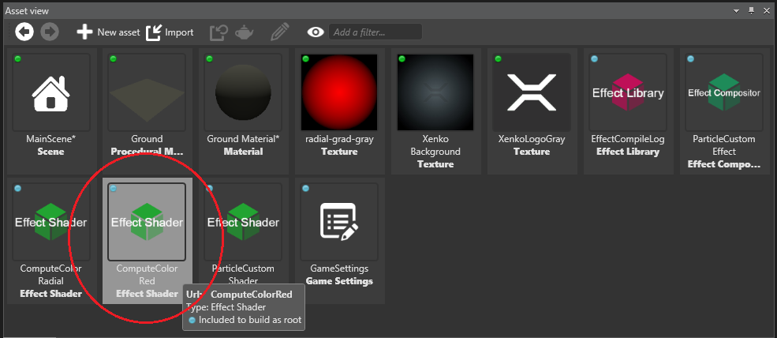

チュートリアル: パーティクル マテリアル
中級 アーティスト プログラマー
このチュートリアルでは、パーティクルシステム用にカスタムシェーダーやマテリアルを作成する方法を紹介します。シェーダーとレンダリングに焦点を当てます。シミュレーションについては、カスタムパーティクル チュートリアルを参照してください。
パーティクルの編集に慣れていない方は、パーティクルの作成をご覧ください。
まずは、新しい Sample: Particles プロジェクトを作成しましょう。

このプロジェクトには 4 つのシーン（AnimatedParticles, ChildParticles, CustomMaterials, CustomParticles）があり、それぞれがパーティクルの異なる使用方法を示しています。
CustomMaterials シーンを開きます。
シーンには、3 つのパーティクルエンティティ（Rad Particle System, Radial Particle System, Two Textures Particle System）があります。
パーティクルエンティティを 1 つ選択してその Source プロパティへ移動し、その中のエミッターとマテリアルを展開します。
赤いパーティクルシステム
赤いパーティクルシステムは、非常にシンプルでカスタマイズも簡単です。マテリアルマップには、葉ノードの入力としてシェーダーを使用するオプションがすでに用意されているので、カスタムシェーダーを作成して、そのノードに割り当てます。
まず、ComputeColor クラスを継承するシェーダー ComputeColorRed.sdsl を作成します。
class ComputeColorRed : ComputeColor
{
override float4 Compute()
{
return float4(1, 0, 0, 1);
}
};
このシェーダーが行うことは、Compute が呼ばれるたびにピクセルシェーディング用の赤色を返すことだけです。後でもっと難しいことをやってみようと思いますが、今はシンプルにいきましょう。
ファイルを保存し、Game Studio でスクリプトを再読み込みします。アセットビューに新しいシェーダーが表示されるはずです。

シェーダーが現れない場合は、プロジェクトをリロードしてください。
シェーダーが読み込まれると、プロパティグリッドで、パーティクルの dynamic emissive material の下からアクセスできます。タイプに Shader を選択し、ドロップダウンメニューから先ほどシーンに追加したシェーダーを選択します。

パーティクルの色は赤です。Game Studio を起動した状態で ComputeColorRed.sdsl を以下のように編集して保存すると、黄色になります。
class ComputeColorRed : ComputeColor
{
override float4 Compute()
{
return float4(1, 1, 0, 1);
}
};
Stride はダイナミック シェーダー コンパイルに対応しているので、パーティクルはすぐに黄色に変わります。
放射状のパーティクルシステム
次のシェーダーでは、テクスチャー座標を使ってエディターに任意の値を表示します。
Check ComputeColorRadial.sdsl.
class ComputeColorRadial<float4 ColorCenter, float4 ColorEdge> : ComputeColor, Texturing
{
override float4 Compute()
{
float radialDistance = length(streams.TexCoord - float2(0.5, 0.5)) * 2;
float4 unclamped = lerp(ColorCenter, ColorEdge, radialDistance);
// 強度は大きくしたいが α 値は 1 に抑えたい
// We want to allow the intensity to grow a lot, but cap the alpha to 1
float4 clamped = clamp(unclamped, float4(0, 0, 0, 0), float4(1000, 1000, 1000, 1));
// 乗算済みアルファパイプラインを使用しているので、すべての色値は α 値を乗じられている必要があります。
// Remember that we use a premultiplied alpha pipeline so all color values should be premultiplied
clamped.rgb *= clamped.a;
return clamped;
}
};
これは、ComputeColorRed と同様の方法で、コンパイルして読み込むことができます。
いくつかの重要な違いがあります。このシェーダーは、Texturing シェーダー基本クラスを継承しています。これにより、ストリームからテクスチャー座標を得られるようになっています。Game Studio のマテリアル側では、テクスチャアーニメーションを使用しない場合に、テクスチャー座標を強制的にストリーム化することができます。
シェーダーの入力値である float4 ColorCenter と float4 ColorEdge は順列（permutations）です。シェーダを読み込むと、プロパティグリッドでは Generics ディクショナリの下にそれらが表示されます。

ここで設定した値は、パーティクル用の ComputeColorRadial シェーダーで使われます。シェーダーの残りの部分は、シェーディングされたピクセルのビルボードの中心からの距離に基づいて、単純にグラデーションカラーを計算しています。
2-テクスチャー パーティクル システム
ここでは、パーティクルのカスタムマテリアルとエフェクトを作成する方法を紹介します。DynamicColor マテリアルは 1 つの RGBA チャンネルをサポートしています。今回のサンプルでは、RGB チャンネルと A チャンネルを分離し、異なるテクスチャー座標でのアニメーションや、色の計算に異なるテクスチャーやバイナリツリーを使用できるようにしています。
パラメーター キー
パラメータキー（ParameterKey）は、データをマッピングしてシェーダーに渡すために使用します。いくつかは生成済みですが、独自に定義することもできます。
シェーダー（ParticleCustomShader）の中でより多くのストリームを定義すれば、それらは自動生成されるクラスにエクスポートされます。以下を ParticleCustomShader.sdsl に追加してみてください。
// -------------------------------------
// streams
// -------------------------------------
stage float4 SomeRandomKey;
生成された .cs ファイルには以下が含まれています。
namespace Stride.Rendering
{
public static partial class ParticleCustomShaderKeys
{
public static readonly ParameterKey<Vector4> SomeRandomKey = ParameterKeys.New<Vector4>();
}
}
今のところ、このストリームは必要ないので、削除してしまいましょう。
マテリアルやエフェクトで使用するために、ParticleCustomMaterialKeys.cs で追加のキーをいくつか定義します。
namespace Stride.Rendering
{
public partial class ParticleCustomShaderKeys
{
static ParticleCustomShaderKeys()
{
}
public static readonly ParameterKey<ShaderSource> BaseColor = ParameterKeys.New<ShaderSource>();
public static readonly ParameterKey<Texture> EmissiveMap = ParameterKeys.New<Texture>();
public static readonly ParameterKey<Color4> EmissiveValue = ParameterKeys.New<Color4>();
public static readonly ParameterKey<ShaderSource> BaseIntensity = ParameterKeys.New<ShaderSource>();
public static readonly ParameterKey<Texture> IntensityMap = ParameterKeys.New<Texture>();
public static readonly ParameterKey<float> IntensityValue = ParameterKeys.New<float>();
}
}
上記のとおり、生成されたクラスは同じ名前を持ち、名前空間は Stride.Rendering であるので、自分のクラスを partial クラスにして、名前空間も一致させなければなりません。これはこのサンプルには影響しませんが、シェーダーコードがいくつかのキーを自動生成している場合にはコンパイルエラーになります。
残りのコードは一目瞭然です。シェーダーの生成にはマップキーとバリューキーが必要になりますので、生成したコードをそれぞれ BaseColor と BaseIntensity キーに設定し、シェーダーで使用できるようにします。
カスタムシェーダー
それでは、ParticleCustomShader.sdsl を見てみましょう。
class ParticleCustomShader : ParticleBase
{
// このシェーダーはユーザーが設定でき、小さなシェーダーからなるバイナリツリーで構成されています
// This shader can be set by the user, and it's a binary tree made up from smaller shaders
compose ComputeColor baseColor;
// このシェーダーはユーザーが設定でき、小さなシェーダーからなるバイナリツリーで構成されています
// This shader can be set by the user, and it's a binary tree made up from smaller shaders
compose ComputeColor baseIntensity;
// スプライトのシェーディング …… ベースクラスの Shading() をオーバーライドし、ColorScale のみを返します。
// Shading of the sprite — we override the base class's Shading(), which only returns ColorScale
stage override float4 Shading()
{
// -----------------------------------------------
// Base particle color RGB
// -----------------------------------------------
float4 finalColor = base.Shading() * baseColor.Compute();
// -----------------------------------------------
// Base particle alpha
// -----------------------------------------------
finalColor.a = baseIntensity.Compute();
// RGB 値に α 値を前もって乗じるのを忘れないでください。
// Don't forget to premultiply the alpha
finalColor.rgb *= finalColor.aaa;
return finalColor;
}
};
ここでは 2 つの compose シェーダー baseColor と abseIntensity を定義しており、ここに RGB と A 用に生成されたシェーダーをそれぞれ挿入しています。すでに VSMain, PSMain ならびにテクスチャリング（textureing）を定義している ParticleBase を継承しており、非常にシンプルな Shading() メソッドを使用しています。
Shading() メソッドをオーバーライドすることで、カスタム動作を定義することができます。使用するコンポジット シェーダーは ComputeColor から派生したものなので、Compute() を使って簡単に評価することができ、色と強度の計算ツリーのルートを得ることができます。
カスタム エフェクト
ここで紹介するエフェクトでは、シェーダーをミックスして合成する方法を説明しています。それはParticleCustomEffect.sdfx にあります。
namespace Stride.Rendering
{
partial shader ParticleCustomEffect
{
// 定数属性に ParticleBaseKeys を使用します。ゲームエンジンで定義されています。
// Use the ParticleBaseKeys for constant attributes, defined in the game engine
using params ParticleBaseKeys;
// 定数属性に ParticleCustomShaderKeys を使用します。このプロジェクトで定義しています。
// Use the ParticleCustomShaderKeys for constant attributes, defined in this project
using params ParticleCustomShaderKeys;
// ゲームエンジンで定義されている ParticleBaseEffect.sdfx を継承しています。
// Inherit from the ParticleBaseEffect.sdfx, defined in the game engine
mixin ParticleBaseEffect;
// このプロジェクトで定義された ParticleCustomShader.sdsl を使用します。
// Use the ParticleCustomShader.sdsl, defined in this project
mixin ParticleCustomShader;
// baseColor のユーザー定義シェーダーが null でない場合には、それを使用します。
// If the user-defined shader for the baseColor is not null use it
if (ParticleCustomShaderKeys.BaseColor != null)
{
mixin compose baseColor = ParticleCustomShaderKeys.BaseColor;
}
// baseIntensity（アルファ）のユーザー定義シェーダーが null でない場合には、それを使用します。
// If the user-defined shader for the baseIntensity (alpha) is not null use it
if (ParticleCustomShaderKeys.BaseIntensity != null)
{
mixin compose baseIntensity = ParticleCustomShaderKeys.BaseIntensity;
}
};
}
ParticleBaseKeys と ParticleBaseEffect は、私たちが継承するベースシェーダーで必要とされるものです。
ParticleCustomShaderKeys は、先ほど定義したキーを提供し、シェーダーを差し込む場所となります。
最後に、両方のシェーダーについてユーザー定義のコードがあるかどうかを確認し、それをプラグインするだけです。baseColor と baseIntensity のパラメータは、先ほど作成したシェーダーのものです。
最後に、すべてのキーを設定し、新しく作成したエフェクトを使用するマテリアルが必要です。
カスタム パーティクル マテリアル
ここでは、ParticleMaterialComputeColor をプロジェクトのParticleCustomMaterial.cs にコピーし、色バイナリーツリーに 2 つのシェーダーを使用するようカスタマイズします。
[DataMemberIgnore]
protected override string EffectName { get; set; } = "ParticleCustomEffect";
ベースクラスは，EffectName で指定されたエフェクトを自動的にロードしようとします．ここでは、先ほど作成したエフェクトの名前を指定しています。
[DataMember(300)]
[Display("Alpha")]
public IComputeScalar ComputeScalar { get; set; } = new ComputeTextureScalar();
[DataMember(400)]
[Display("TexCoord1")]
public UVBuilder UVBuilder1;
private AttributeDescription texCoord1 = new AttributeDescription("TEXCOORD1");
既存の IComputeColor に加えて、強度には IComputeScalar を使用し、float4 ではなく float を返します。また、2 つ目のテクスチャー座標のアニメーションのために、別の UVBuilder を追加します。
var shaderBaseColor = ComputeColor.GenerateShaderSource(shaderGeneratorContext, new MaterialComputeColorKeys(ParticleCustomShaderKeys.EmissiveMap, ParticleCustomShaderKeys.EmissiveValue, Color.White));
shaderGeneratorContext.Parameters.Set(ParticleCustomShaderKeys.BaseColor, shaderBaseColor);
var shaderBaseScalar = ComputeScalar.GenerateShaderSource(shaderGeneratorContext, new MaterialComputeColorKeys(ParticleCustomShaderKeys.IntensityMap, ParticleCustomShaderKeys.IntensityValue, Color.White));
shaderGeneratorContext.Parameters.Set(ParticleCustomShaderKeys.BaseIntensity, shaderBaseScalar);
2 つのシェーダーをロードします。1 つはメインカラー用、もう 1 つは強度用です。これらのシェーダーは、前の 2 つの例で手動で作成したものと似ていますが、プロパティグリッドで編集できる ComputeColor および ComputeScalar プロパティから直接その場で生成しています。生成されたコードは、Compute() を呼び出して、色またはスカラーの計算ツリーの最終結果を返すという点で、先に書いたシェーダーのコードと似ています。
シェーダーコードを生成したら、それを必要な各キーに設定します。ParticleCustomShaderKeys.cs で、ParticleCustomShaderKeys.BaseColor がどのように定義されているかを確認します。エフェクトファイルでは、このキーが設定されているかどうかをチェックし、設定されていれば、シェーダーコードで定義されているストリームに渡します。